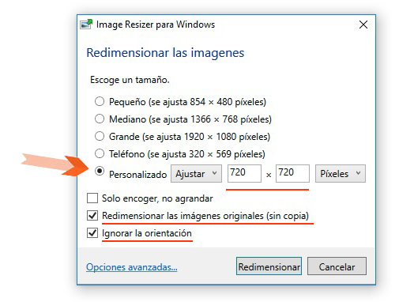

Redimensiona y aliviana tus imágenes en Windows de forma fácil en tan solo tres pasos


Descarga e instala ImageResizerSetup un programa muy útil y liviano (válido para 32 y 64 bits)

Selecciona las imágenes a reducir (control + clic izq. para seleccionar) y haz clic derecho sobre cualquier imagen y elige la opción "Redimensionar imagenes"

En la ventana para redimensionar, elige la opción "Personalizado" con las medidas 720 x 720 y marca las dos últimas opciones como se indica en la imagen


Y, haz clic en el botón "Redimensionar". De esta forma tendrás tus imágenes redimensionadas y livianas.